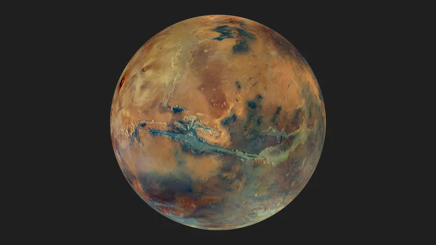

Mars is the fourth planet from the Sun and is often called the "Red Planet" because iron minerals in its surface rocks and dust have oxidized, or essentially rusted, giving the planet its reddish appearance. It is a terrestrial planet, meaning it has a solid rocky surface like Earth, Venus, and Mercury. Mars is smaller than Earth, with a diameter of about 6,779 kilometers, roughly half of Earth's diameter. Its lower gravity means that a person who weighs 100 pounds on Earth would weigh about 38 pounds on Mars.
Mars has a thin atmosphere, made mostly of carbon dioxide, with smaller amounts of nitrogen and argon. Because the atmosphere is so thin, Mars cannot retain heat as effectively as Earth, resulting in very cold temperatures. The planet can experience dramatic temperature changes, and temperatures near the surface can fall far below freezing. Mars also has weather, including clouds, winds, dust storms, and enormous dust storms that can sometimes spread across much of the planet.
One of Mars's most interesting features is its surface geography. It contains enormous volcanoes, deep valleys, impact craters, and vast plains. Mars is home to Olympus Mons, the largest known volcano in the Solar System. It is roughly 22 kilometers high, making it almost three times as tall as Mount Everest. Mars also contains Valles Marineris, a gigantic canyon system stretching thousands of kilometers across the planet. These features show that Mars was geologically active in the past.